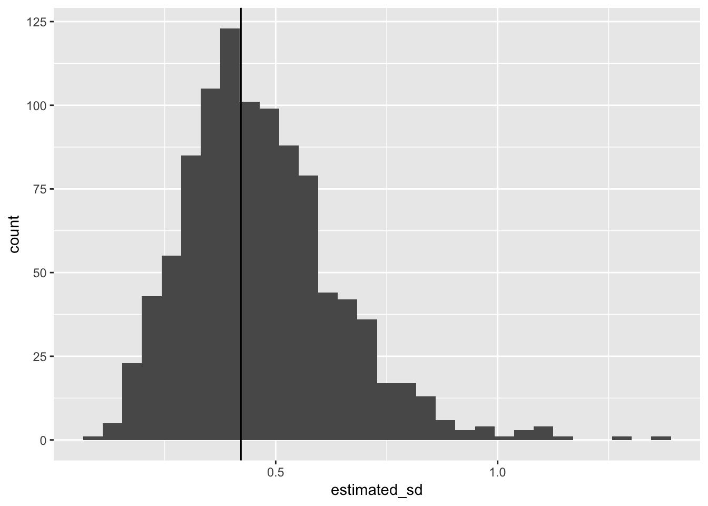

library(tidyverse)
set.seed(1918482)The bootstrap is an asymptotic technique: under some conditions, there is a guarantee it will work as the sample size approaches infinity.
Some ways in which a bootstrap fails:
Examples of the first kind are usually demonstrated theoretically.
Examples of the second kind are often demonstrated by simulation (and then backed up with theory about rates of convergence).
The third kind can usually be identified from the description of a study.
(Example 2.15 Davison and Hinkley (1997))
Let \(X_1, \ldots, X_n\) be i.i.d Uniform\((0, \theta)\). Consider estimating \(\theta\) with \(\hat{\theta} = \max{\{X_1, \ldots, X_n \}}\) (this is the maximum likelihood estimator for this setting).
It can be shown that sampling distribution of \(n(\theta - \hat{\theta})/\theta\) is a standard exponential.
We could approximate the bootstrap distribution of this with \(n(\hat{\theta} - \hat{\theta^*})/\hat{\theta}\) where \(\hat{\theta}^*\) is a the sample maximum for a bootstrap sample.
This is a case where the bootstrap is inconsistent: the bootstrap distribution does not converge to the sampling distribution.
Outline: show \(Q^* = n(\hat{\theta} - \hat{\theta^*})/\hat{\theta}\) cannot be standard exponential as \(n \rightarrow \infty\).
\[ \begin{aligned} P(Q^* = 0 \, | \, \hat{F}) &= P(\hat{\theta}^* = \underline{\hspace{2cm}} \, | \, \hat{F}) \\ & = \, \\ &= 1 - \left( 1 - \frac{1}{n}\right)^n \\ &\rightarrow 1 - e^{-1} \end{aligned} \]
Limiting dist of \(Q^*\) can’t be exponential because it has a point mass at zero.
Don’t bootstrap specific order statistics.
As an example: the bootstrap estimate of the standard deviation of the sampling distribution for the median may be unreliable for small \(n\).
(Example 2.16 Davison and Hinkley (1997))
Need to demonstrate: over repeated samples of size \(n\) from some population, bootstrap estimates of the standard deviation of the sampling distribution for the median, are far from the true standard deviation of the sampling distribution of the median.
For our demonstration, let’s say population is Student’s t with 3 degrees of freedom, \(n = 11\).
MC based estimation of the standard deviation of the sampling distribution of the median:
n <- 11
sample_median <- rerun(1000, rt(n, df = 3)) %>%
map_dbl(median) The sampling distribution of the sample median in this setting:
ggplot(mapping = aes(x = sample_median)) +
geom_histogram()## `stat_bin()` using `bins = 30`. Pick better value with `binwidth`.The standard deviation of the sampling distribution of the sample median:
(emp_sd <- sd(sample_median))## [1] 0.4217876If we have a single sample from the population distribution
x <- rt(n, df = 3)We can find the bootstrap estimate of the sampling distribution
bootstrap_dist <- rerun(250,
x %>% sample(replace = TRUE) %>% median()) %>%
flatten_dbl()
ggplot(mapping = aes(x = bootstrap_dist)) +
geom_histogram()## `stat_bin()` using `bins = 30`. Pick better value with `binwidth`.sd(bootstrap_dist)## [1] 0.4540147Not too far off, but how does it perform on average?
Set up data frame to hold one row for each sample from the population:
many_bootstraps <- data_frame(
id = 1:1000,
sample = rerun(1000, rt(n, df = 3))
)Now for each sample, generate many bootstrapped sample medians. Easiest to understand with a function for the bootstrap part:
bootstrap_medians <- function(x, ntimes = 250){
rerun(ntimes,
x %>% sample(replace = TRUE) %>% median()) %>%
flatten_dbl()
}bootstrap_medians(x)Now perform that operation on every sample from the population:
many_bootstraps <- many_bootstraps %>%
mutate(bootstrapped_medians = map(sample, bootstrap_medians))For each sample, i.e. set of bootstrapped medians, what would we estimate the standard deviation of the sampling distribution to be:
many_bootstraps <- many_bootstraps %>%
mutate(estimated_sd = map_dbl(bootstrapped_medians, sd))
ggplot(many_bootstraps, aes(x = estimated_sd)) +
geom_histogram() +
geom_vline(xintercept = emp_sd)## `stat_bin()` using `bins = 30`. Pick better value with `binwidth`.
many_bootstraps %>% pull(estimated_sd) %>% mean()## [1] 0.4675535About 10% too big on average.
What about the percentile based confidence intervals?
many_bootstraps <- many_bootstraps %>%
mutate(
ci = map(bootstrapped_medians, quantile,
probs = c(0.025, 0.975)),
covers_true_median = map_lgl(ci, ~ .[1] < 0 & .[2] > 0))
many_bootstraps %>% pull(covers_true_median) %>% mean()## [1] 0.937Coverage isn’t too far from 95%
This kind of study also leads to comparison of CI approaches - we want good coverage with small sample sizes.
The i.i.d assumption of the samples \(X_1, \ldots, X_n\) is crucial.
Any dependence between the samples invalidates the resampling step which assumes, the joint CDF is \(F(x_1) \times F(x_2) \times \ldots F(x_n)\).
An example, \(X_1, \ldots, X_n\) are an autoregressive time series, e.g.
x <- arima.sim(model = list(ar = 0.5), n = 50)The method we have talked about is known as the non-parametric bootstrap, because we made no assumptions about the form of the CDF.
The parametric bootstrap, is defined similarly except we specify a parametric form for the CDF, \(F_\varphi(x)\), where \(\varphi\) is some unknown parameter.
Then \(\varphi\) is estimated with \(\hat{\varphi}\) and we use the fitted CDF \(\hat{F}(x) = F_{\hat{\varphi}}(x)\), where the non-parametric bootstrap would use the empirical CDF.
Davison, Anthony Christopher, and David Victor Hinkley. 1997. “Bootstrap Methods and Their Application.” Cambridge University Press.